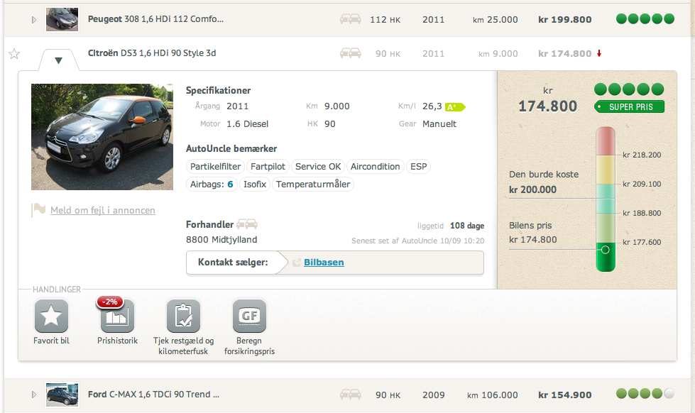

Siden vi første gang lancerede Køberkittet for nogle måneder siden, har vi gjort en stor indsats for at indsamle feedback fra brugerne. Uanset hvad vi laver i AutoUncle, er det enormt vigtigt for os, at brugtbilskøberne elsker resultatet og har lyst til at bruge værktøjerne. Tilbagemeldingen på Køberkittet var meget klar; det er brugbart og en god hjælp i biljagten. Men det er ikke banebrydende.
AutoUncle produkter bages med en stor mængde kærlighed og hårdt arbejde. Det gør at anbefalingsgraden for produkterne er exceptionelt høje. Køberkittet levede ikke helt op til den standard og vi besluttede derfor at være kontante og lukke ned for produktet. I stedet samlede vi alt den feedback vi kunne bære og gik tilbage i garagen. Køberkittet skulle gentænkes.
I dag, kun fem uger senere, er jeg glad for at kunne annoncere, at den process for alvor begynder at tage form.
AutoUncle Apps - Sådan ændrer Køberkittet sig
En af de primære tilbagemeldinger på Køberkittet var, at det er forvirrende at det er en “pakkeløsning”. Brugerne vil hellere betale præcis for det de har behov for. Desuden så de helst at de funktioner man køber adgang til “lå tættere på bilerne”, hvor man jo som brugtbilskøber bruger det meste af sin tid. Det giver fuldstændig mening. Og det er sådan det bliver.
Nok snak. Lad mig præsentere AutoUncle’s nye løsning; AutoUncle Apps

Fremover vil vores fokus være at udvikle ekstra-funktionalitet i App-format - så tæt på bilen som muligt. Som udgangspunkt har vi udgivet fem gratis Apps (Favorit-bil, Prishistorik, Tjek restgæld og kilometerfusk, Se typiske fejl og Beregn forsikringspris) og vi arbejder nu på at udbygge butikken med en blanding af gratis og betalings-apps.
Levede Køberkittet ikke op til dine forventninger? Få dine penge tilbage
Hvis du har købt AutoUncle Køberkit og det ikke levede op til dine forventninger refunderer vi gerne pengene. Alt du skal gøre et at sende en email til jonas@autouncle.com med emnet “refundering”.
Tag på en prøvetur med de nye apps
I AutoUncle-garagen har utålmodigheden for at udgive det nye design været stor. Jeg håber, at du vil bruge 2 minutter på tage det nye design med ud på en prøvetur og fortælle os hvad du synes. Start din søgning fra forsiden
Funktionerne i Køberkittet kommer til at leve videre i app-format. Den første betalings-app bliver “Solgte biler” - en funktion som var populær i Køberkittet.
Hvad synes du om det nye format og den nye bilvisning? Og hvilken app er øverst på din ønskeliste?
/Jonas
PS. Et stort tak til alle jer som har hjulpet os med at give feedback - vi lytter meget gerne til både ros og kritik.